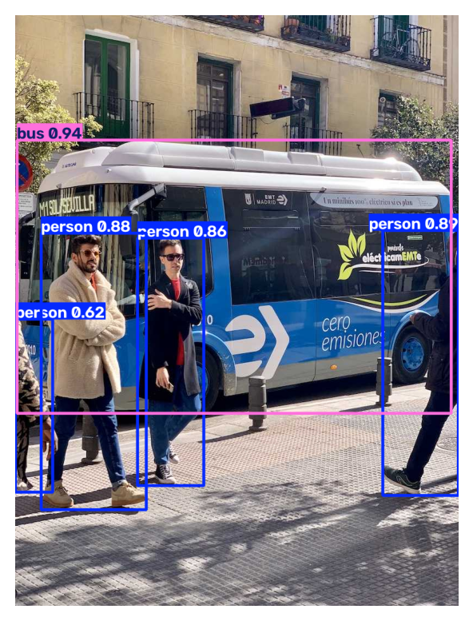
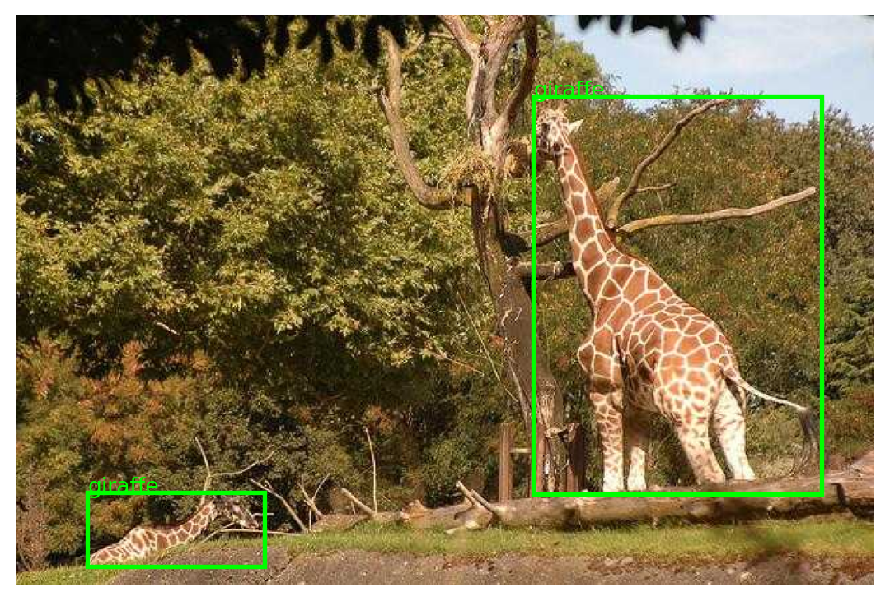

# ▶ 준비 셀 — 그대로 실행하세요.
import torch
print(torch.cuda.is_available())True
⏱ 75분 · 9주차 실습
실습 7에서는 사전학습된 분류 모델을 내려받아 사진 한 장이 어떤 클래스인지 맞혔습니다.
사진 속 물체마다 종류와 위치를 함께 찾는 모델은 어떻게 쓸까요?
사전학습된 탐지 모델 YOLO를 내려받아 사진 속 물체를 찾고, 카메라 화면에서 실시간으로 물체를 찾습니다. 마지막으로 탐지 모델을 학습시킬 때 쓰는 데이터가 어떤 형태인지 확인합니다.
대응 이론: Ch09 객체탐지
Colab 설정: 메뉴 런타임 → 런타임 유형 변경 → T4 GPU를 고른 뒤 시작합니다. GPU가 없어도 실행되지만, 실시간 탐지가 느려집니다.
| 표시 | 뜻 |
|---|---|
| ▶ | 그대로 실행합니다 |
| ✍️ | 보여 준 코드를 손으로 타이핑해서 실행합니다. 빈칸 ___은 채웁니다 |
| 📝 | 과제. 힌트를 보고 스스로 풉니다 |
# ▶ 준비 셀 — 그대로 실행하세요.
import torch
print(torch.cuda.is_available())TrueColab에서 GPU 런타임이면 True가 나옵니다. 다른 라이브러리는 필요한 셀에서 그때그때 불러옵니다.
객체탐지 모델은 사진 속 물체마다 위치를 나타내는 박스와 물체의 종류인 클래스를 함께 찾는 모델입니다. COCO는 사진 약 12만 장에 사람·자동차·컵 같은 80개 클래스의 물체마다 박스와 클래스를 정답으로 붙여 둔 공개 데이터셋입니다. YOLO는 사진을 한 번 훑어 모든 물체의 박스와 클래스를 한꺼번에 출력하는 탐지 모델로, COCO로 학습한 가중치가 공개되어 있습니다.
ultralytics 라이브러리를 쓰면 YOLO를 내려받아 바로 쓸 수 있습니다. 아래 코드는 COCO로 학습한 YOLO 가운데 가장 작은 모델을 내려받고, 이 모델이 찾는 클래스를 확인하는 코드입니다.
# ✍️ 직접 입력
from ultralytics import YOLO # YOLO 모델을 내려받고 쓰는 라이브러리
model = YOLO('yolo11n.pt') # COCO로 학습한 YOLO11의 가장 작은 모델(n) 가중치를 내려받아 불러온다
model.names # 이 모델이 찾는 클래스의 번호와 이름{0: 'person',
1: 'bicycle',
2: 'car',
3: 'motorcycle',
4: 'airplane',
5: 'bus',
6: 'train',
7: 'truck',
8: 'boat',
9: 'traffic light',
10: 'fire hydrant',
11: 'stop sign',
12: 'parking meter',
13: 'bench',
14: 'bird',
15: 'cat',
16: 'dog',
17: 'horse',
18: 'sheep',
19: 'cow',
20: 'elephant',
21: 'bear',
22: 'zebra',
23: 'giraffe',
24: 'backpack',
25: 'umbrella',
26: 'handbag',
27: 'tie',
28: 'suitcase',
29: 'frisbee',
30: 'skis',
31: 'snowboard',
32: 'sports ball',
33: 'kite',
34: 'baseball bat',
35: 'baseball glove',
36: 'skateboard',
37: 'surfboard',
38: 'tennis racket',
39: 'bottle',
40: 'wine glass',
41: 'cup',
42: 'fork',
43: 'knife',
44: 'spoon',
45: 'bowl',
46: 'banana',
47: 'apple',
48: 'sandwich',
49: 'orange',
50: 'broccoli',
51: 'carrot',
52: 'hot dog',
53: 'pizza',
54: 'donut',
55: 'cake',
56: 'chair',
57: 'couch',
58: 'potted plant',
59: 'bed',
60: 'dining table',
61: 'toilet',
62: 'tv',
63: 'laptop',
64: 'mouse',
65: 'remote',
66: 'keyboard',
67: 'cell phone',
68: 'microwave',
69: 'oven',
70: 'toaster',
71: 'sink',
72: 'refrigerator',
73: 'book',
74: 'clock',
75: 'vase',
76: 'scissors',
77: 'teddy bear',
78: 'hair drier',
79: 'toothbrush'}0번 person부터 79번 toothbrush까지 80개 클래스가 나옵니다.
ultralytics에 들어 있는 버스 사진으로 확인합니다. 모델에 사진을 넣으면 사진마다 결과가 하나씩 든 목록이 돌아옵니다. 아래 코드는 사진 한 장을 탐지하고, 박스를 그린 결과를 보여 주는 코드입니다.
# ✍️ 직접 입력
from ultralytics.utils import ASSETS # ultralytics에 들어 있는 예시 사진 폴더
import matplotlib.pyplot as plt # 그림을 그리는 라이브러리
img = ASSETS / 'bus.jpg' # 버스와 사람이 찍힌 예시 사진
r = model(img, verbose=False)[0] # 사진 한 장을 넣었으므로 첫 번째 결과가 이 사진의 결과다
plt.imshow(r.plot()[:, :, ::-1]) # r.plot()은 박스를 그린 사진을 BGR 순서로 돌려주므로 RGB로 뒤집어 그린다
plt.axis('off')
plt.show()
버스 1대와 사람 4명에 박스가 그려지고, 박스마다 클래스 이름과 신뢰도가 적힙니다.
그림에 그려진 내용은 r.boxes에 숫자로 들어 있습니다. 탐지 모델은 물체마다 클래스, 신뢰도, 박스 좌표를 출력합니다. 먼저 클래스 번호를 확인합니다.
# ✍️ 직접 입력
r.boxes.cls # 물체마다 클래스 번호tensor([5., 0., 0., 0., 0.], device='cuda:0')tensor([5., 0., 0., 0., 0.])가 나옵니다. 1절의 model.names에서 5번은 bus, 0번은 person이므로 버스 1대와 사람 4명입니다.
신뢰도는 박스 안에 그 물체가 있다고 모델이 확신하는 정도로, 0과 1 사이의 값입니다.
# ✍️ 직접 입력
r.boxes.conf # 물체마다 신뢰도tensor([0.9402, 0.8881, 0.8783, 0.8557, 0.6219], device='cuda:0')0.94, 0.89, 0.88, 0.86, 0.62로 신뢰도가 높은 순서로 나옵니다. 모델은 신뢰도가 0.25보다 낮은 박스를 버리고 나머지만 돌려줍니다.
박스 좌표는 왼쪽 위 모서리 \((x_1, y_1)\)와 오른쪽 아래 모서리 \((x_2, y_2)\)의 픽셀 위치로 나옵니다. 사진의 왼쪽 위가 \((0, 0)\)이고, \(x\)는 오른쪽으로, \(y\)는 아래로 갈수록 커집니다.
# ✍️ 직접 입력
r.boxes.xyxy.round() # 물체마다 박스의 (x1, y1, x2, y2), 픽셀 단위로 반올림tensor([[ 4., 229., 796., 728.],
[671., 395., 810., 879.],
[ 47., 400., 239., 904.],
[223., 409., 344., 860.],
[ 0., 556., 69., 872.]], device='cuda:0')첫 줄 [4., 229., 796., 728.]이 버스의 박스입니다. 버스는 사진의 (4, 229)에서 (796, 728)까지를 차지합니다.
카메라 화면을 한 장씩 계속 탐지 모델에 넣으면 실시간으로 물체를 찾을 수 있습니다. 아래 셀들은 Colab에서만 실행됩니다. 노트북 컴퓨터에서는 웹캠을 쓰고, 휴대폰 브라우저로 Colab을 열었다면 휴대폰 뒷면 카메라를 씁니다. 처음에는 브라우저가 카메라 사용을 허락할지 묻습니다.
아래 코드는 브라우저의 카메라 화면을 Python으로 한 장씩 가져오고, 탐지한 그림을 브라우저에 다시 보여 주는 함수 두 개를 만드는 코드입니다.
# ▶ 그대로 실행하세요 — (Colab) 카메라 화면을 주고받는 함수
from IPython.display import display, Javascript
from google.colab.output import eval_js
from base64 import b64decode, b64encode
import numpy as np
import cv2 # 사진을 JPEG로 바꾸고 되돌리는 라이브러리
# 브라우저에서 실행되는 코드: 카메라를 켜고, 화면 한 장을 JPEG 문자열로 돌려준다
CAMERA_JS = '''
var video, view, stream, stopped = false;
async function cameraStart() {
const div = document.createElement('div');
const btn = document.createElement('button');
btn.textContent = '멈추기';
btn.onclick = () => { stopped = true; };
video = document.createElement('video');
video.setAttribute('playsinline', '');
video.style.display = 'none';
view = document.createElement('img');
view.style.width = '100%';
view.style.maxWidth = '640px';
view.style.display = 'block';
div.append(view, btn, video);
document.body.appendChild(div);
stream = await navigator.mediaDevices.getUserMedia({video: {facingMode: 'environment'}});
video.srcObject = stream;
await video.play();
}
function cameraFrame(shown) {
if (shown) {
view.src = shown;
google.colab.output.setIframeHeight(document.documentElement.scrollHeight, true);
}
if (stopped) {
stream.getTracks().forEach(t => t.stop());
return '';
}
const canvas = document.createElement('canvas');
canvas.width = video.videoWidth;
canvas.height = video.videoHeight;
canvas.getContext('2d').drawImage(video, 0, 0);
return canvas.toDataURL('image/jpeg', 0.8);
}
'''
# 카메라를 켜고 화면과 멈추기 버튼을 셀 아래에 만든다
def camera_start():
display(Javascript(CAMERA_JS))
eval_js('cameraStart()')
# shown에 그림(BGR 배열)을 주면 브라우저에 보여 주고, 카메라 화면 한 장을 BGR 배열로 돌려준다
# 멈추기 버튼을 누른 뒤에는 None을 돌려준다
def camera_frame(shown=None):
data = ''
if shown is not None:
data = 'data:image/jpeg;base64,' + b64encode(cv2.imencode('.jpg', shown)[1]).decode()
reply = eval_js(f'cameraFrame("{data}")')
if reply == '':
return None
jpg = np.frombuffer(b64decode(reply.split(',')[1]), np.uint8)
return cv2.imdecode(jpg, cv2.IMREAD_COLOR)실시간 탐지는 카메라 화면 한 장을 탐지하고, 박스를 그린 그림을 보여 준 뒤 다음 화면을 가져오는 일의 반복입니다. 아래 코드는 멈추기를 누를 때까지 이 일을 반복하는 코드입니다.
# ✍️ 직접 입력
camera_start()
frame = camera_frame() # 첫 화면을 가져온다
while frame is not None: # 멈추기를 누를 때까지 반복한다
r_cam = model(frame, verbose=False)[0] # 화면 한 장을 탐지한다
frame = camera_frame(r_cam.plot()) # 박스를 그린 그림을 보여 주고 다음 화면을 가져온다카메라 화면 위에 박스와 클래스, 신뢰도가 계속 그려집니다. 컵, 휴대폰, 노트북, 의자, 병처럼 80개 클래스에 있는 물건을 비추면 그 물건에 박스가 그려집니다.
4절은 박스를 그린 사진 전체를 브라우저로 다시 보내므로, 화면이 사진을 한 장씩 넘기듯 끊겨 보입니다. 브라우저가 카메라 영상을 그대로 보여 주고, Colab은 3절에서 본 출력값인 클래스 이름, 신뢰도, 박스 좌표만 돌려주면 주고받는 양이 크게 줄어듭니다. 그러면 영상은 끊기지 않고 박스만 조금 늦게 따라옵니다.
아래 코드는 카메라 영상을 보여 주면서 화면을 가로 640픽셀로 줄여 Python으로 가져오고, Python이 돌려준 박스를 영상 위에 그리는 함수 두 개를 만드는 코드입니다.
# ▶ 그대로 실행하세요 — (Colab) 카메라 영상 위에 박스를 그리는 함수
# 4절의 첫 셀에서 불러온 라이브러리(display, eval_js, np, cv2 등)를 그대로 쓴다
import json # 파이썬 목록을 브라우저가 읽는 문자열로 바꾸는 표준 라이브러리
# 브라우저에서 실행되는 코드: 카메라 영상을 보여 주고, 그 위의 투명한 판에 박스를 그린다
OVERLAY_JS = """
var video2, board, stream2, stopped2 = false;
async function overlayStart() {
const div = document.createElement('div');
div.style.position = 'relative';
div.style.width = '100%';
div.style.maxWidth = '640px';
const btn = document.createElement('button');
btn.textContent = '멈추기';
btn.onclick = () => { stopped2 = true; };
video2 = document.createElement('video');
video2.setAttribute('playsinline', '');
video2.muted = true;
video2.style.width = '100%';
video2.style.display = 'block';
board = document.createElement('canvas');
board.style.position = 'absolute';
board.style.left = '0';
board.style.top = '0';
board.style.width = '100%';
div.append(video2, board);
document.body.append(div, btn);
stream2 = await navigator.mediaDevices.getUserMedia({video: {facingMode: 'environment'}});
video2.srcObject = stream2;
await video2.play();
board.width = 640;
board.height = Math.round(640 * video2.videoHeight / video2.videoWidth);
google.colab.output.setIframeHeight(document.documentElement.scrollHeight, true);
}
function overlayFrame(boxes) {
const ctx = board.getContext('2d');
ctx.clearRect(0, 0, board.width, board.height);
ctx.lineWidth = 3;
ctx.font = '18px sans-serif';
ctx.strokeStyle = 'lime';
ctx.fillStyle = 'lime';
for (const b of boxes) {
ctx.strokeRect(b[2], b[3], b[4] - b[2], b[5] - b[3]);
ctx.fillText(b[0] + ' ' + b[1], b[2] + 4, b[3] + 20);
}
if (stopped2) {
stream2.getTracks().forEach(t => t.stop());
return '';
}
const small = document.createElement('canvas');
small.width = board.width;
small.height = board.height;
small.getContext('2d').drawImage(video2, 0, 0, small.width, small.height);
return small.toDataURL('image/jpeg', 0.7);
}
"""
# 카메라 영상과 멈추기 버튼을 셀 아래에 만든다
def overlay_start():
display(Javascript(OVERLAY_JS))
eval_js('overlayStart()')
# boxes에 박스 목록을 주면 영상 위에 그리고, 카메라 화면 한 장(가로 640픽셀, BGR 배열)을 돌려준다
# 박스 하나는 [클래스 이름, 신뢰도, x1, y1, x2, y2]이고, 멈추기 버튼을 누른 뒤에는 None을 돌려준다
def overlay_frame(boxes=None):
if boxes is None:
boxes = []
reply = eval_js(f'overlayFrame({json.dumps(boxes)})')
if reply == '':
return None
jpg = np.frombuffer(b64decode(reply.split(',')[1]), np.uint8)
return cv2.imdecode(jpg, cv2.IMREAD_COLOR)반복은 4절과 같습니다. 다른 점은 박스를 그린 그림 대신 3절의 cls, conf, xyxy로 박스 목록을 만들어 보낸다는 것입니다.
# ✍️ 직접 입력
overlay_start()
frame = overlay_frame() # 첫 화면을 가져온다
while frame is not None: # 멈추기를 누를 때까지 반복한다
r_cam = model(frame, verbose=False)[0] # 화면 한 장을 탐지한다
boxes = []
for c, p, b in zip(r_cam.boxes.cls.tolist(), r_cam.boxes.conf.tolist(), r_cam.boxes.xyxy.tolist()):
boxes.append([r_cam.names[int(c)], round(p, 2)] + b) # [클래스 이름, 신뢰도, x1, y1, x2, y2]
frame = overlay_frame(boxes) # 박스를 영상 위에 그리고 다음 화면을 가져온다카메라 영상은 끊기지 않고 재생되고, 그 위에 박스와 클래스 이름, 신뢰도가 따라다닙니다.
탐지 모델을 학습시키려면 사진마다 물체의 박스와 클래스를 적은 정답이 필요합니다. 이 정답을 레이블이라고 합니다. YOLO는 정해진 형태의 폴더와 레이블 파일로 학습합니다. coco8은 ultralytics가 공개한 작은 데이터셋으로, COCO 사진 8장과 그 레이블을 YOLO의 형태로 담고 있습니다.
# ▶ 그대로 실행하세요 — coco8 내려받기
import urllib.request # 인터넷에서 파일을 내려받는 표준 라이브러리
import zipfile # 압축 파일을 푸는 표준 라이브러리
url = 'https://github.com/ralbu85/lecture_deeplearning_labs/releases/download/data-v1/coco8.zip'
urllib.request.urlretrieve(url, 'coco8.zip')
zipfile.ZipFile('coco8.zip').extractall('.')사진은 coco8/images 폴더에, 레이블은 coco8/labels 폴더에 들어 있고, 두 폴더는 각각 학습용 train과 검증용 val로 나뉩니다. 학습용 사진과 레이블 파일의 이름을 확인합니다.
# ✍️ 직접 입력
import os # 폴더와 파일을 다루는 표준 라이브러리
sorted(os.listdir('coco8/images/train')) # 학습용 사진 파일 이름['000000000009.jpg',
'000000000025.jpg',
'000000000030.jpg',
'000000000034.jpg']# ✍️ 직접 입력
sorted(os.listdir('coco8/labels/train')) # 학습용 레이블 파일 이름['000000000009.txt',
'000000000025.txt',
'000000000030.txt',
'000000000034.txt']사진 4장과 레이블 파일 4개의 이름이 확장자만 다르고 같습니다. 사진 000000000025.jpg의 레이블은 000000000025.txt입니다. 이 레이블 파일을 열어 봅니다.
# ✍️ 직접 입력
print(open('coco8/labels/train/000000000025.txt').read())23 0.770336 0.489695 0.335891 0.697559
23 0.185977 0.901608 0.206297 0.129554
두 줄이 나옵니다. 한 줄이 물체 하나이므로 이 사진에는 물체가 두 개 있습니다. 한 줄의 다섯 숫자는 차례로 클래스 번호, 박스 중심의 \(x\), 박스 중심의 \(y\), 박스의 너비, 박스의 높이입니다. 좌표와 크기는 사진의 너비와 높이로 나눈 값이라 0과 1 사이에 있습니다. 클래스 23은 1절의 model.names에서 giraffe, 기린입니다.
레이블의 숫자를 픽셀 단위로 되돌려 사진 위에 그리면 사람이 그린 정답 박스를 볼 수 있습니다. 중심에서 너비와 높이의 절반을 빼면 왼쪽 위 모서리가 되고, 여기에 사진의 너비와 높이를 곱하면 픽셀 단위가 됩니다. 아래 코드는 레이블 파일의 박스를 사진 위에 그리는 코드입니다.
# ✍️ 직접 입력
from PIL import Image # 사진을 다루는 라이브러리
photo = Image.open('coco8/images/train/000000000025.jpg')
W, H = photo.size # 사진의 너비와 높이(픽셀)
plt.imshow(photo)
for line in open('coco8/labels/train/000000000025.txt'):
c, cx, cy, w, h = map(float, line.split()) # 한 줄의 다섯 숫자를 실수로 바꾼다
x, y = (cx - w / 2) * W, (cy - h / 2) * H # 박스의 왼쪽 위 모서리(픽셀)
plt.gca().add_patch(plt.Rectangle((x, y), w * W, h * H, fill=False, color='lime', linewidth=2))
plt.text(x, y, model.names[int(c)], color='lime')
plt.axis('off')
plt.show()
오른쪽의 큰 기린과 왼쪽 아래에 일부만 보이는 기린에 박스가 그려집니다. 탐지 모델은 이런 사진과 레이블 수천~수만 장으로 학습합니다. 그러므로 내가 찾고 싶은 물체로 탐지 모델을 학습시키려면, 내 사진마다 이 형태의 레이블을 만들어야 합니다.
4절의 실시간 탐지로 주변 물건 세 가지를 비추고, 물건마다 탐지된 클래스와 신뢰도를 표에 적습니다.
# 📝
#> 힌트: 4절의 두 셀을 차례로 실행하고, 물건을 하나씩 카메라에 비춥니다.
camera_start()
frame = camera_frame()
while frame is not None:
r_cam = model(frame, verbose=False)[0]
frame = camera_frame(r_cam.plot())| 물건 | 탐지된 클래스 | 신뢰도 |
|---|---|---|
| ✏️ | ✏️ | ✏️ |
| ✏️ | ✏️ | ✏️ |
| ✏️ | ✏️ | ✏️ |
예시 답: 컵(
cup), 휴대폰(cell phone), 노트북(laptop), 병(bottle), 의자(chair)처럼 80개 클래스에 있는 물건은 대체로 0.5 이상의 신뢰도로 찾습니다.
coco8/labels/train/000000000009.txt를 열어 이 사진에 물체가 몇 개 있고 각각 어떤 클래스인지 적습니다.
# 📝
#> 힌트: 6절처럼 레이블 파일을 한 줄씩 읽고, 줄의 첫 숫자를 model.names로 클래스 이름으로 바꿉니다.
for line in open('coco8/labels/train/000000000009.txt'):
print(model.names[int(line.split()[0])])bowl
bowl
broccoli
bowl
orange
orange
orange
orange✏️ 물체 수와 클래스:
예시 답: 물체는 8개입니다. 그릇(
bowl) 3개, 오렌지(orange) 4개, 브로콜리(broccoli) 1개입니다.
| 배운 것 | 핵심 |
|---|---|
| 사전학습된 탐지 모델 | YOLO('yolo11n.pt'). COCO 80개 클래스 |
| 탐지 | r = model(사진)[0], r.plot()으로 박스를 그린 그림 |
| 탐지 결과 | r.boxes의 cls(클래스 번호), conf(신뢰도), xyxy(박스의 왼쪽 위와 오른쪽 아래, 픽셀) |
| 실시간 탐지 | 카메라 화면 한 장을 탐지하고 그림을 보여 주는 일을 반복 |
| 영상 위의 박스 | 클래스 이름, 신뢰도, 박스 좌표만 브라우저로 보내고, 브라우저가 영상 위에 박스를 그림 |
| 학습 데이터 | images와 labels 폴더, 사진마다 같은 이름의 .txt 레이블 |
| 레이블 한 줄 | 클래스 번호, 박스 중심 \(x\), 중심 \(y\), 너비, 높이. 좌표와 크기는 사진 크기로 나눈 0~1 값 |
다음: 실습 10에서는 이미지에서 텍스트로 넘어갑니다.